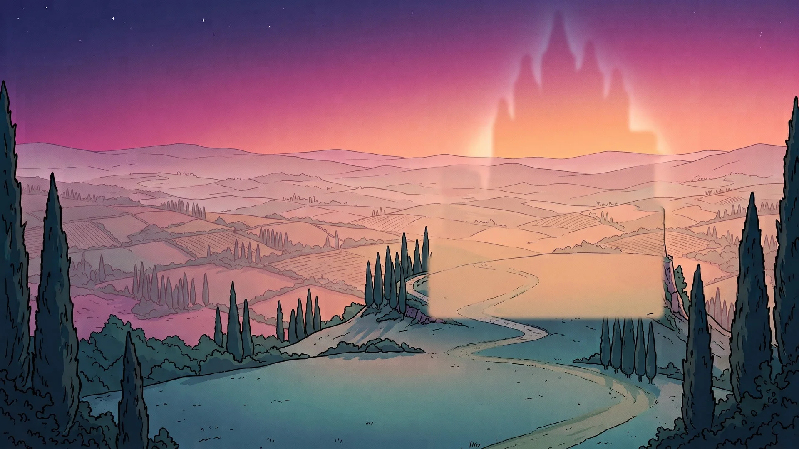
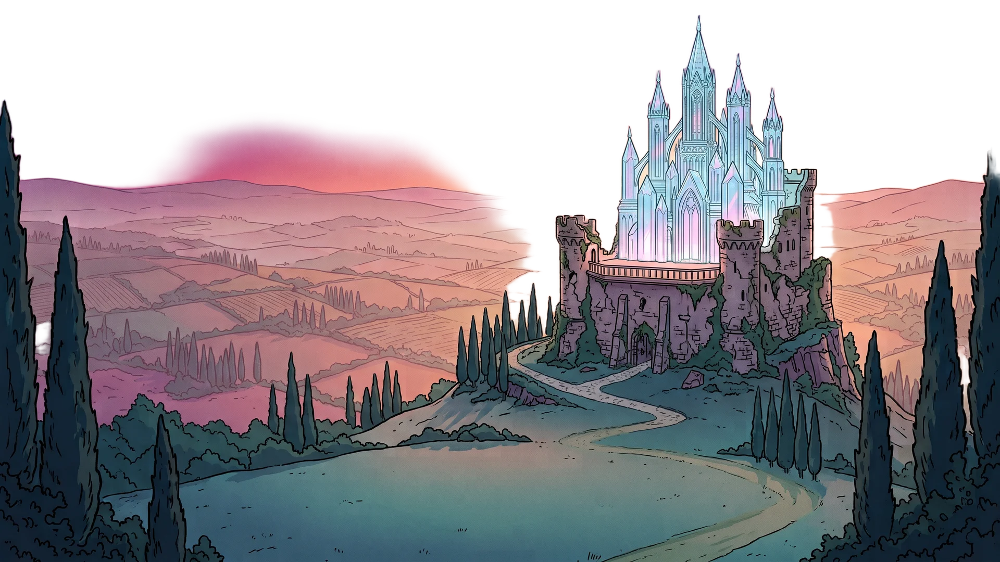
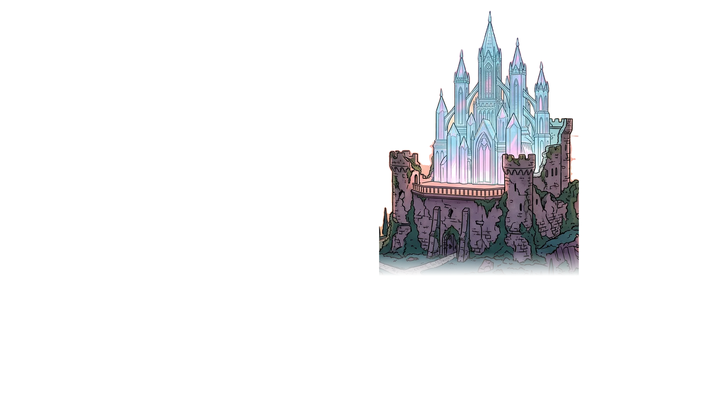
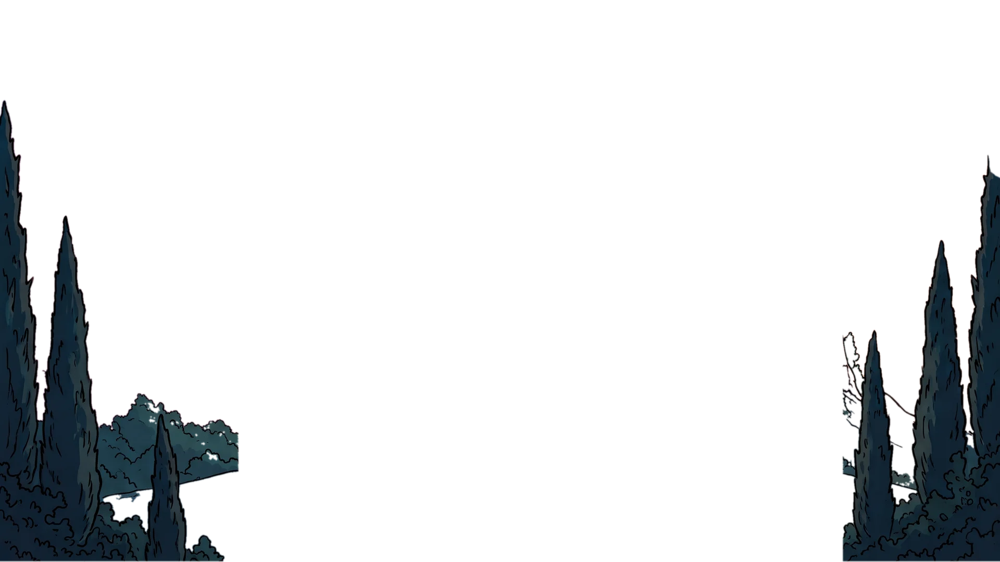
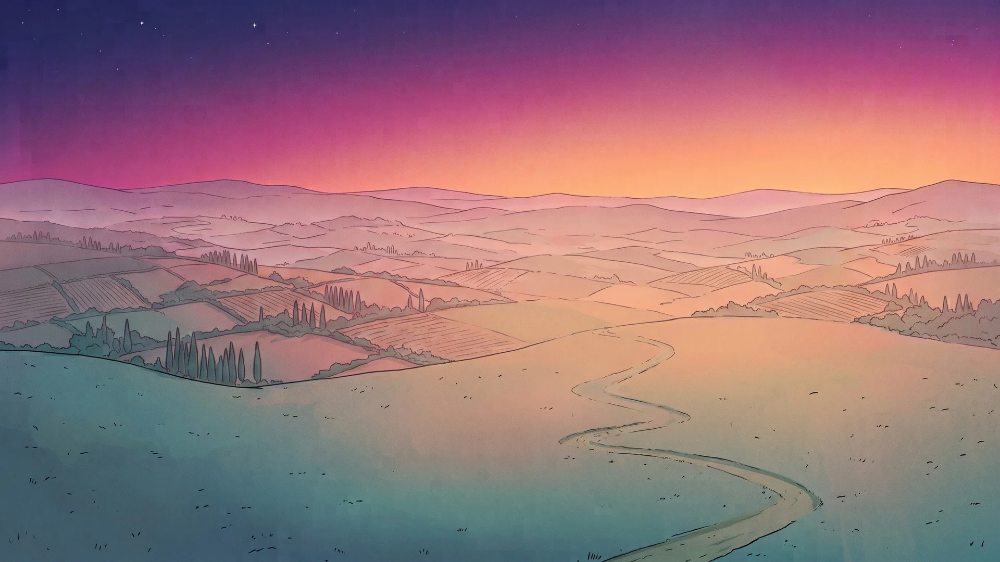
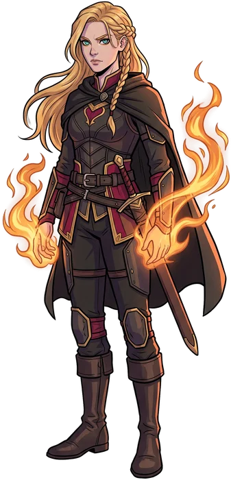
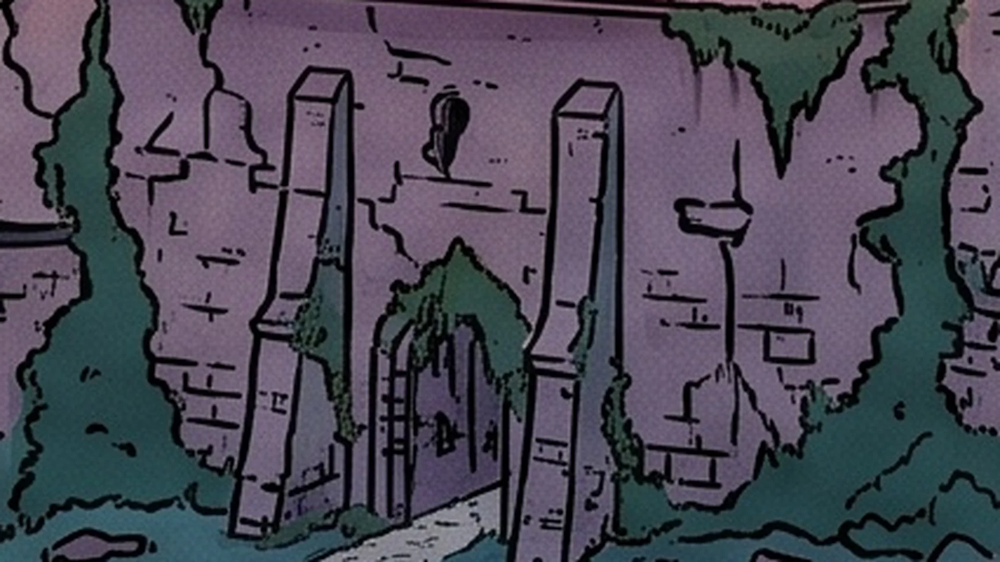
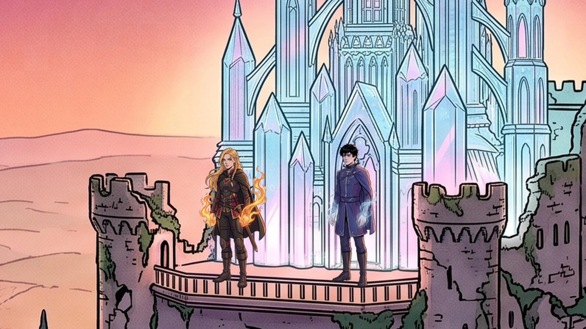

El castillo de cristal
Una aventura inspirada en Reina de sombras, de Sarah J. Maas

Los prados de Adarlan
Cae la tarde. A lo lejos brilla el castillo de cristal. ¿Por dónde avanzas?

Aelin
«Soy Aelin Galathynius, reina de Terrasen. Mi amigo Dorian está atrapado en ese castillo. Sola no puedo entrar. ¿Me ayudas?»

La puerta del castillo
La puerta solo se abre para quien conoce la verdad. ¿Quién controla el cuerpo de Dorian?

El collar
Su padre le puso un collar de piedra negra. Por él, un príncipe valg controla su cuerpo. Dorian sigue consciente, atrapado dentro de sí mismo.
Aelin
Antes fue Celaena Sardothien, la asesina más temida de Adarlan. Ahora regresa como reina de Terrasen, con su magia de fuego.
El castillo
Sede del rey de Adarlan. Sus agujas de cristal se alzan sobre una antigua fortaleza de piedra.
Toca los puntos dorados para descubrir la escena.
La lucha
Arrastra el fuego de Aelin hasta el collar de Dorian.
Guardiana de Terrasen
Dorian rompió el collar y el castillo de cristal se quebró. Gracias a ti, Aelin no luchó sola.
¿Qué harías tú en el lugar de Aelin?